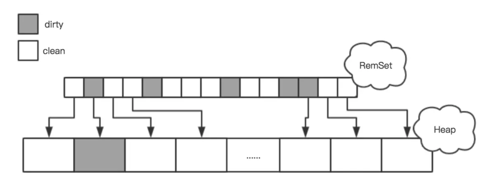

本文内容
根节点枚举
首先，我们知道，根节点枚举是从 GC Roots，逐步的进行枚举，以此枚举出所有的存活对象。
GC Roots 内容
GC Roots 包括以下内容：
在虚拟机栈（栈帧中的本地变量表）中引用的对象，譬如各个线程被调用的方法堆栈中使用到的参数、局部变量、临时变量等。
这里指的是所有的栈帧，而不是最顶层正在执行的栈帧。只有栈帧滚蛋了，栈帧里引用的对象才能被回收
在方法区中类静态属性引用的对象，譬如Java类的引用类型静态变量。
顺带一提，方法区里面存储的静态变量，存的是它的引用值，引用指向的对象依然还是在堆中的
在方法区中常量引用的对象，也就是类中使用
static final定义的静态常量（没毛病，跟着类被加载的时候放进方法区）在本地方法栈中JNI（即通常所说的Native方法）引用的对象。（实际来说跟虚拟机栈是一个意思）
Java虚拟机内部的引用，如基本数据类型对应的Class对象，一些常驻的异常对象（比如NullPointExcepiton、OutOfMemoryError）等，还有系统类加载器。
这些引用都是 JVM 自己单独保留的，对于我们来说基本没有什么讨论的必要。
这一块儿的意思应该是：JVM（C++代码）中保留了堆里的一个内存地址（C++ 里有个指针变量指向了堆的某个内存地址），而这个内存地址处存着一个 JAVA 对象
所有被同步锁（synchronized关键字）持有的对象。
反映Java虚拟机内部情况的JMXBean、JVMTI中注册的回调、本地代码缓存等
根节点枚举的 STW
上述这些根节点是很明确的，但是有一个问题就是：我们如果真的一个一个枚举效率肯定是很低的，现在Java应用越做越庞大，光是方法区的大小就常有数百上千兆，里面的类、常量等更是恒河沙数，若要逐个检查以这里为起源的引用肯定得消耗不少时间。（根节点枚举表示：从上面的那些内存里找到引用类型作为 GC Roots，也就是一个一个找出根节点）
迄今为止，所有收集器在根节点枚举这一步骤时都是必须暂停用户线程的，因此毫无疑问根节点枚举与之前提及的整理内存碎片一样会面临相似的“Stop The World”的困扰。
即使是号称停顿时间可控，或者（几乎）不会发生停顿的CMS、G1、ZGC等收集器，枚举根节点时也是必须要停顿的。
准确式GC
目前主流Java虚拟机使用的都是准确式垃圾收集，它的含义是：JVM 能够知道内存中的某个地址存储的内容是数字还是引用。
例如：内存某个地址A处的4个字节，如果按照 int 来解释，可能就是一个数字 3000。如果按照引用来解释，那么就是一个指向地址为 3000 的这块内存的指针。而 JVM 是有足够的信息知道到底是一个普通数字还是一个引用的。
OopMap
在HotSpot的解决方案里，是使用一组称为OopMap的数据结构来达到这个目的。一旦类加载动作完成的时候，HotSpot就会把对象内什么偏移量上是什么类型的数据计算出来，在即时编译（见第11章）过程中，也会在特定的位置记录下栈里和寄存器里哪些位置是引用。这样收集器在扫描时就可以直接得知这些信息了，并不需要真正一个不漏地从方法区等GC Roots开始查找。
oopMap就是一个附加的信息，告诉你栈上哪个位置本来是个什么东西。 这个信息是在JIT编译时跟机器码一起产生的。因为只有编译器知道源代码跟产生的代码的对应关系。 每个方法可能会有好几个oopMap，就是根据safepoint把一个方法的代码分成几段，每一段代码一个oopMap，作用域自然也仅限于这一段代码。 循环中引用多个对象，肯定会有多个变量，编译后占据栈上的多个位置。那这段代码的oopMap就会包含多条记录。
OopMap 的维护和使用（个人的理解和猜测，可能会有错误，请不要完全相信下面内容）：
- 编译时，将一个方法分成几段代码，也就是几个安全点，那么对应就有几个 OopMap
- 例如 methodA() 被分成 3 个安全点，那么就有 OopMap1、OopMap2、OopMap3 一共三个 OopMa
- 每个 OopMap 记录了：运行到了 OopMap 这一行的 methodA() 对应的栈帧里的局部变量表里，有哪些槽位是引用类型，以及引用的具体类型。
- 也就是说一个 OopMap 是一个
Map<Integer, Class>，里面的 key 代表栈帧的局部变量表的槽位索引（表示这个槽位的内容是一个引用），里面的 value 代表了一个具体的类型，例如 String、User 等 Java 类型（表示 key 对应的槽位，引用的对象是这个类型） - GC 的时候，一个栈帧一个栈帧的进入，进入一个栈帧就去找这个栈帧对应的几个 OopMap 的集合（一个方法有几个安全点就有几个 OopMap），然后遍历 OopMap，这样就可以枚举出这个栈帧中保存的引用了，从而也就找到了 GC Roots
安全点
从上面的 OopMap 的维护和使用过程中可以看出，有一个安全点的概念。
这个概念的来源是这样的：我们有几种方式可以生成一个方法的 OopMap，第一种是方法每执行一条指令，就生成一个 OopMap，第二种是某些指令集合生成一个 OopMap（例如每10行代码生成一个 OopMap），第三种是每个方法只生成一个 OopMap。
GC 的时候必须要等待线程运行到了安全点，才可以开始。（也就是线程必须运行到某些特定的代码行数才可以进行GC）
因为垃圾收集器是通过 OopMap 来枚举栈上的根节点的，而 OopMap 是编译时生成的，一个 OopMap 对应某一行代码或者某几行代码，如果一个 OopMap 对应的是第一到第四行代码，那么只有运行到第四行时，这个 OopMap 才能代表当前线程的状态（如果只运行到第三行，那么依靠 OopMap 来枚举根节点是不准确的）
因此，可以将方法的执行理解为：
指令1 指令2 指令3 生成 OopMap1 安全点1 指令4 指令5 指令6 指令7 指令8 生成 OopMap2 安全点2 指令9 指令10 生成 OopMap3 安全点3所以垃圾收集器工作时，必须要等待线程运行到安全点处才能进行STW，然后进行根节点枚举
下面我们来说说为什么主流是第二种方式：某些指令集合生成一个 OopMap。
每条指令生成一个 OopMap
特点：
- 一个方法有多少指令就有多少个 OopMap
- 所以一个方法很可能有几百上千个 OopMap，并且很多可能都是空的 Map（因为有很多的指令并不会创建引用）
缺点：
- OopMap 数量过多
- 由于 OopMap 数量过多，所以需要的存储空间特别大，遍历的时候效率也很低
某些指令集合生成一个 OopMap（JVM 采用）
这种方式，主要是在一些特定的位置生成 OopMap：
- 循环的末尾
- 方法临返回前 / 调用方法的call指令后
- 可能抛异常的位置
特点：
- 一个方法根据这些位置生成多个 OopMap
- 一个方法的 OopMap 数量不会太多，一般只有几个（因为这些区域一般来说在一个方法里不会特别多）
- OopMap 很少为空，基本都有数据
优点：
- OopMap 数量不多
- 遍历的效率较高，而且占用的存储较小（因为 OopMap 数量少）
一个方法生成一个OopMap
特点：
- 一个方法只有一个 OopMap
优点：
- 占用的空间少，遍历的效率高
缺点：
- 必须要等待方法执行完成，一个方法的粒度可能过大
- 一个方法有可能执行很长时间（好几个复杂的逻辑），这时 GC 要等待的时间可能很长（等待运行这个方法的线程停止）
安全点的选择
有了安全点的设定，也就决定了用户程序执行时并非在代码指令流的任意位置都能够停顿下来开始垃圾收集，而是强制要求必须执行到达安全点后才能够暂停。因此，安全点的选定既不能太少以至于让收集器等待时间过长，也不能太过频繁以至于过分增大运行时的内存负荷。
安全点位置的选取基本上是以“是否具有让程序长时间执行的特征”为标准进行选定的，因为每条指令执行的时间都非常短暂，程序不太可能因为指令流长度太长这样的原因而长时间执行，“长时间执行”的最明显特征就是指令序列的复用，例如方法调用、循环跳转、异常跳转等都属于指令序列复用，所以只有具有这些功能的指令才会产生安全点。
主要在以下位置生成安全点：
- 循环的末尾
- 方法临返回前 / 调用方法的call指令后
- 可能抛异常的位置
如何让线程进入安全点
对于安全点，另外一个需要考虑的问题是，如何在垃圾收集发生时让所有线程（这里其实不包括执行JNI调用的线程）都跑到最近的安全点，然后停顿下来。
这里有两种方案可供选择：抢先式中断（Preemptive Suspension）和主动式中断（Voluntary Suspension）
抢先式中断
抢先式中断不需要线程的执行代码主动去配合，在垃圾收集发生时，系统首先把所有用户线程全部中断，如果发现有用户线程中断的地方不在安全点上，就恢复这条线程执行，让它一会再重新中断，直到跑到安全点上。现在几乎没有虚拟机实现采用抢先式中断来暂停线程响应GC事件。
主动式中断（JVM 采用）
主动式中断的思想是当垃圾收集需要中断线程的时候，不直接对线程操作，仅仅简单地设置一个标志位，各个线程执行过程时会不停地主动去轮询这个标志，一旦发现中断标志为真时就自己在最近的安全点上主动中断挂起。轮询标志的地方和安全点是重合的，另外还要加上所有创建对象和其他需要在Java堆上分配内存的地方，这是为了检查是否即将要发生垃圾收集，避免没有足够内存分配新对象。
由于轮询操作在代码中会频繁出现，这要求它必须足够高效。HotSpot使用内存保护陷阱的方式，把轮询操作精简至只有一条汇编指令的程度。
安全区域
安全点机制保证了程序执行时，在不太长的时间内就会遇到可进入垃圾收集过程的安全点。但是，程序“不执行”的时候呢？所谓的程序不执行就是没有分配处理器时间，典型的场景便是用户线程处于Sleep状态或者Blocked状态，这时候线程无法响应虚拟机的中断请求，不能再走到安全的地方去中断挂起自己，虚拟机也显然不可能持续等待线程重新被激活分配处理器时间。对于这种情况，就必须引入安全区域（Safe Region）来解决。
安全区域是指能够确保在某一段代码片段之中，引用关系不会发生变化，因此，在这个区域中任意地方开始垃圾收集都是安全的。我们也可以把安全区域看作被扩展拉伸了的安全点。
当用户线程执行到安全区域里面的代码时，首先会标识自己已经进入了安全区域，那样当这段时间里虚拟机要发起垃圾收集时就不必去管这些已声明自己在安全区域内的线程了。当线程要离开安全区域时，它要检查虚拟机是否已经完成了根节点枚举（或者垃圾收集过程中其他需要暂停用户线程的阶段），如果完成了，那线程就当作没事发生过，继续执行；否则它就必须一直等待，直到收到可以离开安全区域的信号为止。
记忆集与卡表
记忆集是一种用于记录从非收集区域指向收集区域的指针集合的抽象数据结构。（例如我们收集新生代时，需要记录有哪些老年代的对象可以指向新生代的对象）
为什么需要这么做？
这里我们整理一下枚举根节点 GC Roots 后的操作了。
想当然的当然是：通过根节点一层一层的引用下去，A走到B，B走到C，C走到D。。。
但是这个效率十分低下，这种方式下，即使我们只想回收新生代，我们依然需要扫描所有的堆内存：因为可能存在有根节点 A 引用到了老年代的对象 B，对象 B 引用了新生代的对象 C 这样的跨代引用的情况。所以我们不得不扫描老年代的内存。（老年代默认是新生代的2倍）
因此就出现了卡表（记忆集的一种实现）
CARD_TABLE [this address >> 9] = 0;
Java 虚拟机用了一个叫做 CardTable (卡表)的数据结构来标记老年代的某一块内存区域中的对象是否持有新生代对象的引用，卡表的数量取决于老年代的大小和每张卡对应的内存大小，每张卡在卡表中对应一个字节，当老年代中的某个对象持有了新生代对象的引用时，JVM 就把这个对象对应的 Card 所在的位置标记为 dirty (设置为1)，这样在 Minor GC 时就不用扫描整个老年代，而是扫描 Card 为 Dirty 对应的那些内存区域。
也就是说，一张卡代表了老年代的一块儿内存，卡表中数值为1时表示老年代的这块儿内存里的对象，有引用到新生代的对象。于是 JVM 就把它们加入到 GC Roots 中，从而 JVM 只需要扫描卡表（然后扫描里面代表的小部分老年代对象）不需要扫描整个的老年代内存
在JVM中,一个Card的大小是512字节,在多个线程并行收集时,JVM通过ParGCCardsPerStrideChunk参数设置每个线程每次扫描的Card数量，默认是256，相当于是把老年代分成许多strides，每个线程每次扫描一个stride，每个stride大小为512*256 = 128K，如果你的老年代大小为4G,那总共有4G/128K=32K个Strides。多线程在扫描这么多的strides时就涉及到调度和分配的问题,stride数量太多就会导致线程在stride之间切换的开销增加，进而导致GC暂停时间增长。因此JVM提供了ParGCCardsPerStrideChunk这个参数来配置每个stride对应的card数量，这个数量要根据实际的业务场景进行调优,网上一般流传3个魔术数字:32768、4K和8K。
-XX:+UnlockDiagnosticVMOptions
-XX:ParGCCardsPerStrideChunk=4096
这个值不能设置的太大，因为GC线程需要扫描这个stride中老年代对象持有的新生代对象的引用，如果只有少量引用新生代的对象那就导致浪费了很多时间在根本不需要扫描的对象上。
如果我们不考虑效率和成本的话，最简单的实现可以用非收集区域中所有含跨代引用的对象数组来实现这个数据结构，如下所示：
Class RememberedSet {
Object[] set[OBJECT_INTERGENERATIONAL_REFERENCE_SIZE];
}
这种记录全部含跨代引用对象的实现方案，无论是空间占用还是维护成本都相当高昂。而在垃圾收集的场景中，收集器只需要通过记忆集判断出某一块非收集区域是否存在有指向了收集区域的指针就可以了，并不需要了解这些跨代指针的全部细节。那设计者在实现记忆集的时候，便可以选择更为粗犷的记录粒度来节省记忆集的存储和维护成本，下面列举了一些可供选择（当然也可以选择这个范围以外的）的记录精度：
- 字长精度：每个记录精确到一个机器字长（就是处理器的寻址位数，如常见的32位或64位，这个精度决定了机器访问物理内存地址的指针长度），该字包含跨代指针。
- 对象精度：每个记录精确到一个对象，该对象里有字段含有跨代指针。
- 卡精度：每个记录精确到一块内存区域，该区域内有对象含有跨代指针。
其中，第三种“卡精度”所指的是用一种称为“卡表”（Card Table）的方式去实现记忆集，这也是目前最常用的一种记忆集实现形式，一些资料中甚至直接把它和记忆集混为一谈。前面定义中提到记忆集其实是一种“抽象”的数据结构，抽象的意思是只定义了记忆集的行为意图，并没有定义其行为的具体实现。卡表就是记忆集的一种具体实现，它定义了记忆集的记录精度、与堆内存的映射关系等。关于卡表与记忆集的关系，读者不妨按照Java语言中HashMap与Map的关系来类比理解。
卡表最简单的形式可以只是一个字节数组，而HotSpot虚拟机确实也是这样做的。以下这行代码是HotSpot默认的卡表标记逻辑：
CARD_TABLE [this address >> 9] = 0;

可见，卡表实际上就是内存空间的粗粒度的位图表示。它其中的每个元素分别对应内存中的一块连续区域是否有跨代引用对象，如果有，该区域会被标记为“脏的”（dirty），否则就是“干净的”（clean）。这样在GC时，只需要扫描记忆集合就可以简单地确定跨代引用的位置，是个典型的空间换时间的思路。
如何维护卡表
卡表元素何时变脏的答案是很明确的——当老年代中的某个对象持有了新生代对象的引用时，JVM 就把这个对象对应的 Card 所在的位置标记为dirty(bit位设置为1)，这样在Minor GC时就不用扫描整个老年代，而是扫描Card为Dirty对应的那些内存区域。
但问题是如何变脏，即如何在对象赋值的那一刻去更新维护卡表呢？假如是解释执行的字节码，那相对好处理，虚拟机负责每条字节码指令的执行，有充分的介入空间；但在编译执行的场景中呢？经过即时编译后的代码已经是纯粹的机器指令流了，这就必须找到一个在机器码层面的手段，把维护卡表的动作放到每一个赋值操作之中。
在HotSpot虚拟机里是通过写屏障（Write Barrier）技术维护卡表状态的。先请读者注意将这里提到的“写屏障”，以及后面在低延迟收集器中会提到的“读屏障”与解决并发乱序执行问题中的“内存屏障”区分开来，避免混淆。写屏障可以看作在虚拟机层面对“引用类型字段赋值”这个动作的AOP切面，在引用对象赋值时会产生一个环形（Around）通知，供程序执行额外的动作，也就是说赋值的前后都在写屏障的覆盖范畴内。在赋值前的部分的写屏障叫作写前屏障（Pre-Write Barrier），在赋值后的则叫作写后屏障（Post-Write Barrier）。
HotSpot虚拟机的许多收集器中都有使用到写屏障，但直至G1收集器出现之前，其他收集器都只用到了写后屏障。下面这段代码是一段更新卡表状态的简化逻辑：
void oop_field_store(oop* field, oop new_value) {
// 引用字段赋值操作
*field = new_value;
// 写后屏障, 在这里完成卡表状态更新
post_write_barrier(field, new_value);
}
应用写屏障后，虚拟机就会为所有赋值操作生成相应的指令，一旦收集器在写屏障中增加了更新卡表操作，无论更新的是不是老年代对新生代对象的引用，每次只要对引用进行更新，就会产生额外的开销，不过这个开销与Minor GC时扫描整个老年代的代价相比还是低得多的。